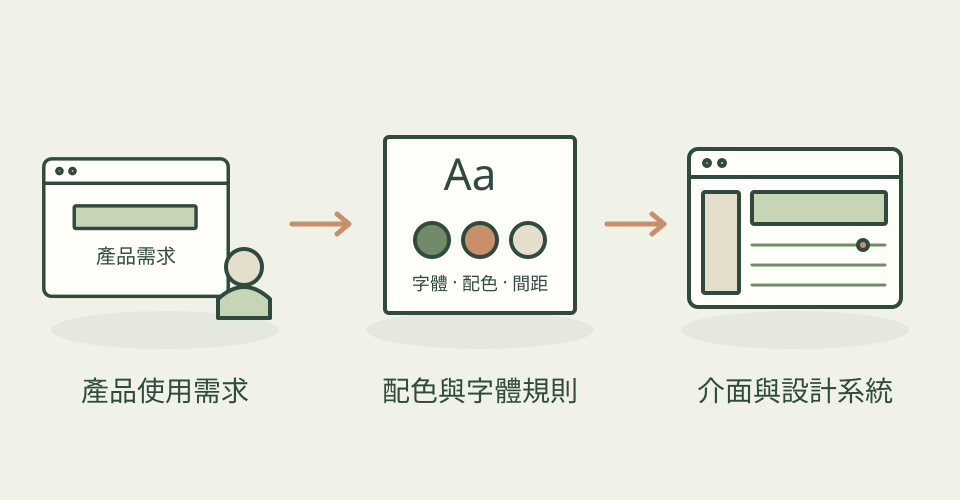

當你需要畫面能被實際操作，設計就不只看氣氛。UI UX Pro Max 將多種介面樣式、字體配對與使用原則整理成可供 agent 查找的資料。
它怎麼幫忙
它依產品種類與需求提供設計參考，協助建立介面和設計系統，並提醒可讀性、互動與實作上的常見問題。
功能快速理解

依產品需求查找樣式、字體與互動準則，建立介面設計的共同規則。
功能示意・本站繪製 放大查看可以這樣開口
這是一個可依需求修改的委託範例。
為展覽票務後台建立設計系統，包含清楚的表格、手機導覽、票種狀態與可讀的數字排版，並解釋配色選擇。
適合什麼工作
適合產品設計、介面實作與需要快速建立設計基準的人。
開始之前
- 準備工具
- 支援技能的 coding agent；搜尋工具依專案安裝說明設定。
- 使用成本
- 主要依 agent 使用量計算，外部服務另計。
- 交付內容
- 設計系統建議與介面程式
- 先留意
- 仍需使用真實內容檢查可用性；資料庫建議不等於經過使用者測試。
最近的觀察
2026-10-27：搜尋 React 3D 介面或 React 2FA 驗證畫面時，不再把 3d、2fa 的開頭數字誤認為 React 3／2 版本，避免只查到過時建議或沒有結果。另修正舊版下載成功後暫存目錄未清理。屬於查詢與維護修正，沒有新增設計風格；本站未執行候選程式。
作者與來源
本文依作者公開說明整理，沒有實際執行這個專案。功能插圖由本站繪製，原作者範例另行標示；並非本站執行技能的測試結果。GitHub 星數為專案總量，觀察時間為 2026年10月28日 08:29（台北時間）。
與前次快照相比增加 658 星；這不是 GitHub Trending 排名。